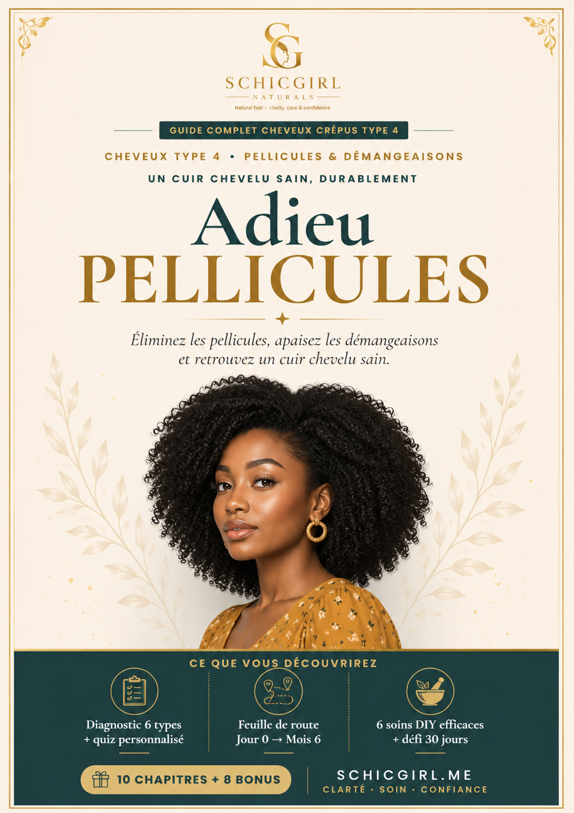
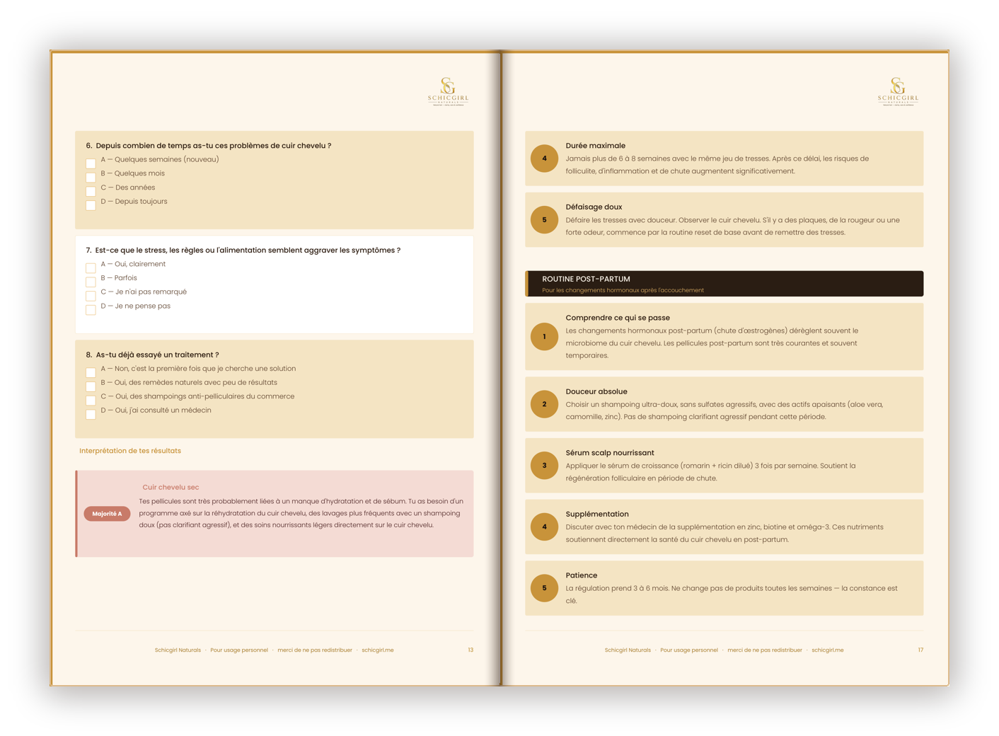
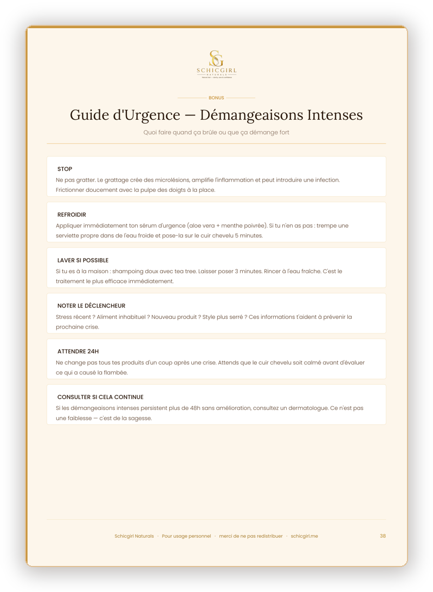

📖Comprends et élimine les pellicules sur cheveux crépus Type 4 — durablement, sans agresser tes longueurs.
La plupart des conseils anti-pellicules sont pensés pour des cheveux lisses. Le tien est différent — et ta méthode aussi.
Chaque routine respecte un cuir chevelu crépus 4A, 4B, 4C — fragile et sujet à la sécheresse.
Avant de traiter, tu comprends pourquoi les pellicules reviennent. Fini les produits au hasard.
Identifie ton type parmi les 6 pellicules grâce à un guide d'analyse pas à pas.
5 routines et 6 recettes DIY simples, avec les ingrédients actifs qui agissent vraiment.
6 recettes DIY à base d'ingrédients accessibles, pensées pour apaiser sans agresser.
Un défi 30 jours et des habitudes pour que ton cuir chevelu reste sain — pour de bon.


Aperçu de vraies pages du guide
Le changement commence par comprendre — pas par essayer encore.
Pour toute personne aux cheveux crépus avec démangeaisons, plaques ou pellicules récurrentes, qui veut comprendre la cause avant de traiter.
« J'ai enfin compris pourquoi rien ne marchait avant. La partie diagnostic a tout changé pour moi. »
« En 3 semaines, les démangeaisons ont beaucoup diminué. Les recettes DIY sont simples et mes longueurs ne sont pas agressées. »
« J'avais l'habitude d'acheter tout et n'importe quoi. Maintenant je sais quel est mon type et je suis une routine. Plus de plaques visibles. »
« Le défi 30 jours m'a donné un cadre. C'est la première fois que je tiens une routine jusqu'au bout, et mon cuir chevelu le sent. »
« Clair, bien expliqué et adapté à mes 4C. J'aurais aimé avoir ce guide il y a des années. »
Retours de lectrices sur le guide.
Tous les bonus sont déjà inclus dans ton guide — rien de plus à acheter.
Schicgirl est dédiée à l'éducation des cheveux naturels, avec une spécialité : le Type 4. La mission est simple — aider les femmes à comprendre leur cuir chevelu et leurs cheveux pour obtenir des résultats qui durent, au lieu de courir après le produit miracle.
Une question avant d'acheter ? Écris-moi sur Facebook 💛